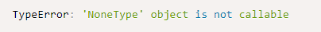
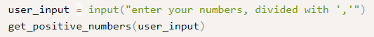

אוקיי הבנתי תודה:slight_smile:
{kind=link}
תעביר את הארגומנטים בסדר הבא: מספר, מספר, פעולה חשבונית. מאמין שזה יפתור את הבעיה 
לייק 1
עכשיו הבודק לא מעיר לי על המודולים האלה, אבל הוא כן מעיר לי שה from לא במקום הנכון.
קצת קשה להבין מהדוגמה שלך, אך איזה סוג מודול הוא?
ה-from צריך להיות באותו בלוק (מובנה\חיצוני\שאתה יצרת) פשוט בסופו
הוא אכן ככה. המודול הוא קולקשן. שמתי אותו עם רווח הפרדה בסוף הרשימה. זה אולי הרווח?
שלח לי בבקשה בפרטי
לייק 1
היי אשמח להסבר כללי על הבודק האוטומטי,
נגיד עכשיו נתקלתי במחברת 3 בתרגיל חתול ארוך הוא ארוך בהערות הבאות:
{kind=link}
אני מחפשת בפורום ומוצאת הסברים ספציפיים על מה כל טעות אבל עדיין אני לא יודעת איך לגשת לבדיקה לבד ולהבין מה הכוונה. אשמח להכוונה ככללית
(קראתי את תחילת הנושא שמאוד עוזר אבל אשמח לפירוט נרחב יותר)
תודה רבה
אי אפשר לראות ככה את כל השגיאה, אבל נתנו לך שתי מחרוזות ואת הפלט הרצוי עליהן, ששונה משלך. נסי לעבוד איתן ולראות שאת מגיעה לפלט הרצוי.
כך למשל במילון שלך יש את המיפוי "4":1שאינו תקני מכיוון שביקשו להעיף מהטקסט את כל התווים שאינם אותיות קטנות, אז 4 בכלל לא אמור להישאר שם. ודאי שאת מנקה את הטקסט כמו שביקשו והריצי על הקלטים שלהם שוב
2 לייקים
תרגיל פילטר מותאם אישית:

לא מבין לחלוטין את ההתראה אבל בעיקר לא מבין למה אני מקבל אותה,
רגע - הפונקציה דורשת פונקציה ועוד אובייקט ( כמו שהתבקש בתרגיל)
תרגיל נשאר? חיובי:
{kind=link}
טוען שחסר את הקלט מהמשתמש, אבל בתרגיל ביקשו שהפונקציה תקבל את הקלט מהמשתמש, לכן שמתי אותו מחוץ לפונקציה ואז הפונקציה מדפיסה את הקלט שהתקבל:

אם ככה, אני אמור לכתוב את הפונקציה שהבקשה לקלט בפנים ולהדפיס אותה בלי כלום בסוגריים? כי עשיתי לפי מה שהבנתי מההוראות לתרגיל.
תרגיל א זה אקליפטוס פ זה פתיתים:
{kind=link}
השתדלתי להכניס לכם כמה שיותר מההתראה:
בגדול בהתחלה לא שמתי לב לסעיף של הסרת המספרים וחשבתי שבגלל זה ההתראה, לאחר מכן התייחסתי לסעיף בקלילות והסרתי את המספרים הלא רצויים אבל עדיין נשארת ההתראה, וכיוון שאני עובד עם range לא הגיוני שיש לי פריטים עודפים (בהתחשב כמובן שכל פריט מופיע פעמים, קטן וגדול אבל ה- ord שלו שונה)
לגבי 1 - תקרא בדוקומנטציה של filter וגם פה: הבודק האוטומטי ו None : יש כאן הסבר כללי
לגבי 2 - אתה יכול לנסות להכניס את הקריאה לתוך הפונקציה, יכול להיות שיש עוד אופציות שיעברו את הבודק (כמו פונקציות עזר), אבל אני חושבת שהוא מנסה להפעיל את הפונקציה שביקשו בלי פרמטרים ושתו’כ ההפעלה יתבקש הקלט מהמשתמש (זה גם מה שאני מבינה מהגדרת התרגיל)
לגבי 3 - מה שיוצא בסוף הפונקציה שלך לא תואם למה שיש בבודק - תעבור שוב על כל האותיות שיוצאות לך ותראה האם זה באמת בדיוק מה שביקשו ואין איבר מיותר או איבר חסר בקצוות
2 לייקים
1 ו- 2, תודה רבה עזרת לי מאוד.
3, אם אפשר לוודא שהבנתי כמו שצריך את כוונת התרגיל.
ביקשו את כל האותיות בטווח a-z ובטווח A-Z בלי המספרים 65, 90, 97, 122.
הכוונה שהאותיות האלו לא יופיעו בקוד או שהן לא יופיעו ברשימה הסופית? ממה שאני הבנתי זה שהן לא יופיעו ברשימה הסופית, אך במידה ומדובר במצב השני איזו אפשרות יש לי בלי להשתמש בהן? הרי יכול להיות רק ord אחד לאותיות האלו, אז אם מבקשים שנשתמש ב ord ו- chr אין לנו אפשרות שלא להשתמש במספרים/אותיות האלו.
לא להשתמש במספרים הספציפיים האלו בקוד. מותר להשתמש באיזה אותיות שבא לך בקוד. על התוצאה להכיל את כל האותיות הקטנות (a-z כולל) וכל הגדולות (A עד Z כולל) ושום דבר אחר
לייק 1
בסדר גמור, מצאתי את הטעות שלי.
תודה רבה!
לייק 1
היי, בתרגיל zipwith קיבלתי את השגיאה -
{kind=link}
הקוד עובד לפי כל הדוגמאות בעדכון האחרון לגבי התרגיל.
בנוסף אין בקוד שימוש ב + למעט כאשר אני מוסיפה אותו ל i של אינדקס.
שימי לב שהפונקציה “add” מקבלת מספר בלתי מוגבל של ארגומנטים.
השימוש בה הוא כזה: add(1, 2, 3) == 6
היי, בעת הגשת התרגיל “א’ אוהל פ’ זה פייתון” נתקלתי בשגיאה המצורפת של הבודק האוטומטי, זאת למרות שהפונקציה מדפיסה בדיוק מה שהתבקש ממנה.
אשמח לעזרה.
{kind=link}
הסט המוחזר אמור לכלול את כל אותיות ה-abc, גדולות וקטנות כאחד. כולל A,a,Z,z. אין בין זה לבין העובדה שהקוד צריך לא לכלול מספרים מסוימים שום קשר
מניסוח השאלה חשבתי שהתבקשתי להתעלם מהאותיות האלה. תודה!
תודה!
ועוד כמה ל20 תווים